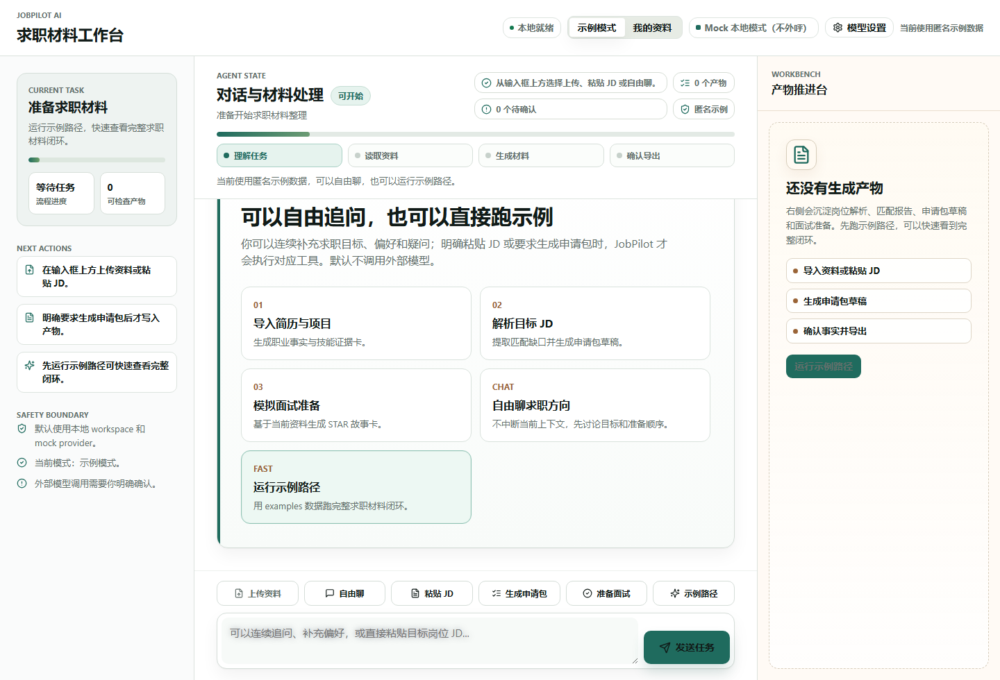
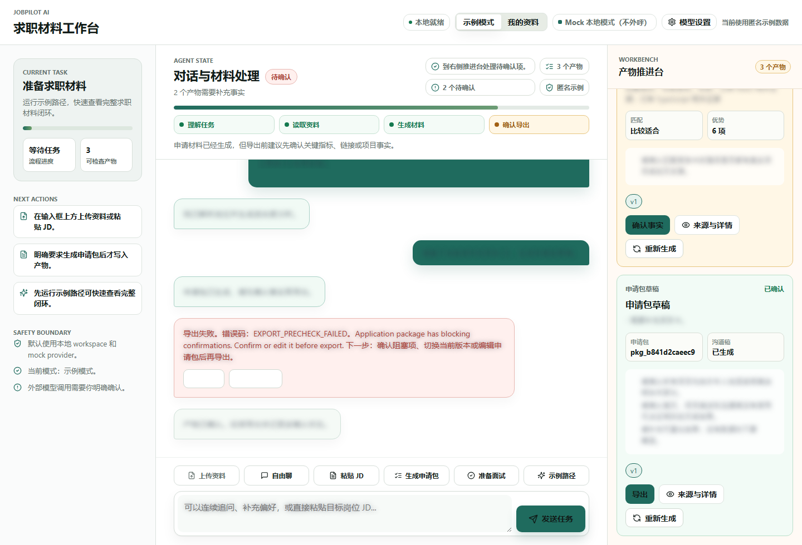
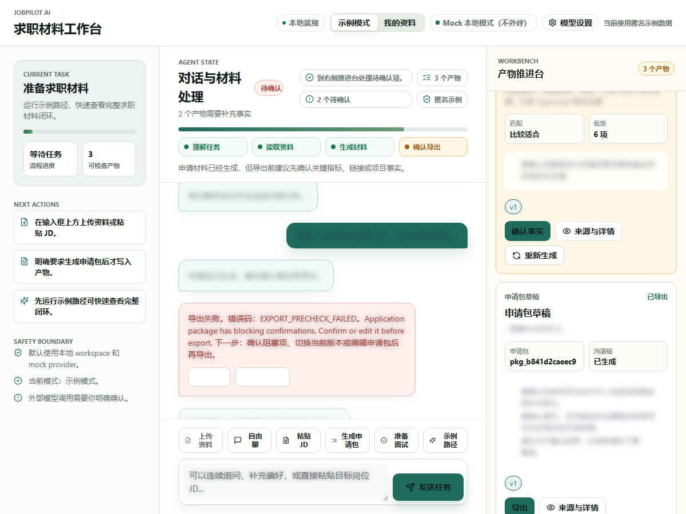
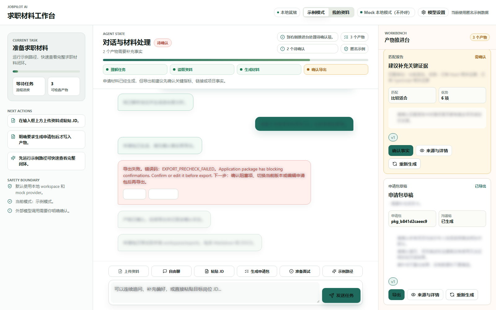
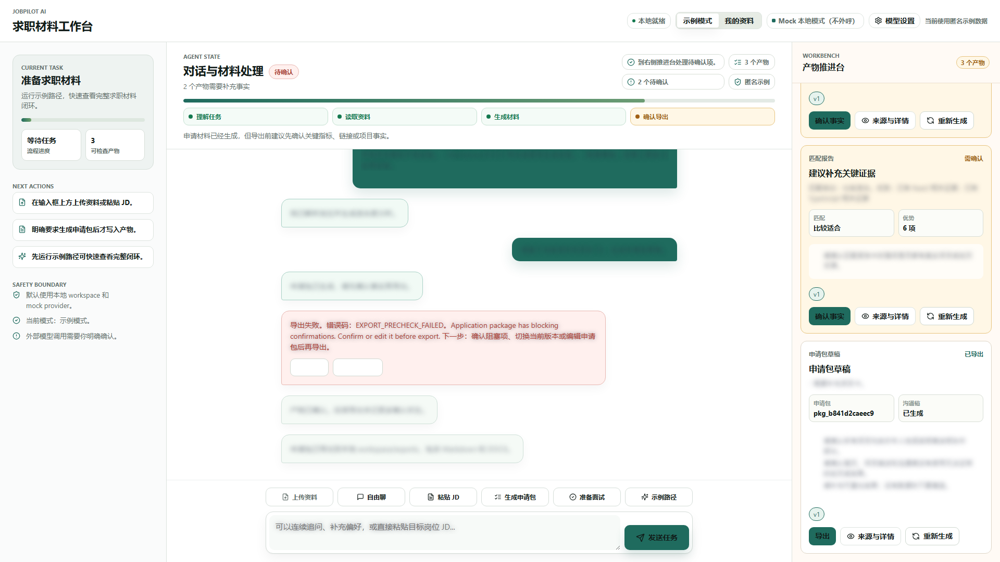
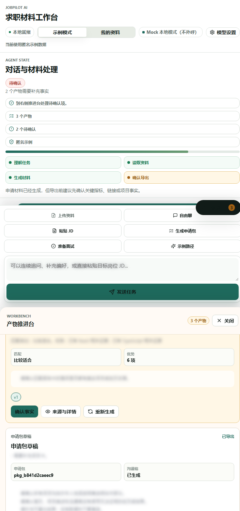
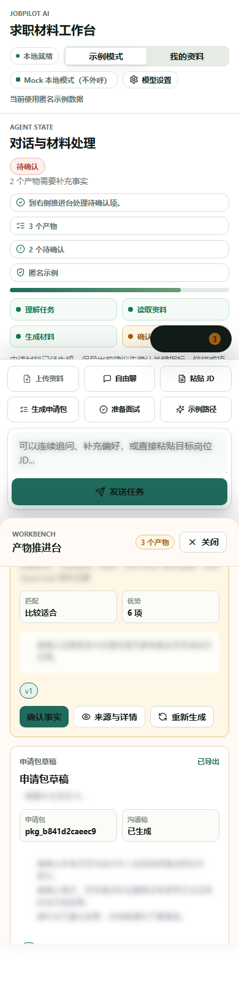

目标架构
- Chatbox UI：展示本地资料入口、事实确认、申请包产物、导出和连续追问状态。
- FastAPI API：复用 workspace、ingest-local、profile、job、application、artifact 和 export 接口。
- JobPilot Domain Tools：从用户指定文件抽取事实、项目证据、岗位要求、匹配报告和申请包。
- Provider Policy Gate：P5-REAL 强制 mock/local；真实外部 provider 转入 P6 opt-in。
- Evidence Layer：Chrome/CDP 截图、脱敏 HTML 报告、PRD 规格检视和隐私审计。
当前实现
- 资料来源为 examples/p5_synthetic_personas 下的合成简历、合成项目资料和合成 JD。
- 真实资料路径只来自 JOBPILOT_REAL_RESUME_PATH、JOBPILOT_REAL_PROJECT_PATH、JOBPILOT_REAL_JD_PATH。
- 脚本生成临时 .tmp scenario；真实原文和绝对路径不得进入仓库文档或最终报告正文。
- 浏览器截图前注入 redacted summary 样式，隐藏消息正文、资料预览、source quote 和长文本。
- 未确认 blocking questions_to_confirm 时导出必须失败；确认事实后允许 Markdown/DOCX 导出。
自动化步骤
| # | 步骤 | 动作 | 结果 |
|---|---|---|---|
| 1 | Open Chatbox | goto | passed |
| 2 | Wait for local workspace | waitText | passed |
| 3 | Provider guard | evaluate | passed |
| 4 | Enable redacted screenshot mode | evaluate | passed |
| 5 | Initial redacted P5-REAL state | screenshot | passed |
| 6 | Ingest authorized local materials | evaluate | passed |
| 7 | Fill authorized JD | fill | passed |
| 8 | Send JD | clickText | passed |
| 9 | Wait JD parsed | waitText | passed |
| 10 | JD and match redacted evidence | screenshot | passed |
| 11 | Fill package request | fill | passed |
| 12 | Send package request | clickText | passed |
| 13 | Wait package generated | waitText | passed |
| 14 | Package needs confirmation redacted evidence | screenshot | passed |
| 15 | Try export before confirmation | evaluate | passed |
| 16 | Wait export blocked | waitText | passed |
| 17 | Blocked export redacted evidence | screenshot | passed |
| 18 | Confirm package facts | evaluate | passed |
| 19 | Wait package confirmed | waitText | passed |
| 20 | Confirmed package redacted evidence | screenshot | passed |
| 21 | Export after confirmation | evaluate | passed |
| 22 | Wait export completed | waitText | passed |
| 23 | Export completed redacted evidence | screenshot | passed |
| 24 | Export completed 1200 redacted evidence | screenshot | passed |
| 25 | Export completed 1600 redacted evidence | screenshot | passed |
| 26 | Export completed 1920 redacted evidence | screenshot | passed |
| 27 | Narrow exported layout redacted evidence | screenshot | passed |
| 28 | Mobile exported layout redacted evidence | screenshot | passed |
验收标准
- 资料必须明确标注为合成，不得在报告中写成真实个人资料验收。
- 只读取用户指定的三个文件，不递归扫描个人目录。
- 文本抽取质量通过，不把空文本、乱码或二进制噪声写成解析成功。
- P5-REAL 使用 mock/local provider，不配置、不调用 MiniMax、DeepSeek 或 OpenAI-compatible。
- 完成资料导入、JD 解析、匹配报告、申请包、导出拦截、事实确认、导出和连续追问。
- 报告截图只展示脱敏摘要；不得出现联系方式、账号、API Key、私密链接或未授权长原文。
- 报告明确 P5 尚未因本步骤自动冻结，P5-Freeze 仍需最终回归、人工体验记录和 final closure audit。
命令结果
| 命令 | 状态 | 证据 |
|---|---|---|
scripts/generate_p5_real_data_acceptance.py | planned | 生成临时场景前完成路径、provider 和文本抽取质量检查。 |
node scripts/browser_tools/browser-acceptance.mjs --scenario .tmp/p5-real-data-closure.scenario.json | pending | 执行真实界面截图并生成 HTML 报告。 |
PRD 规格检视
| PRD / Gate 要求 | 证据 | 结论 |
|---|---|---|
| P5-REAL 使用真实授权资料完成本地闭环。 | 场景由三个用户指定文件路径生成，且不递归扫描目录。 | PENDING UNTIL RUN |
| P5 默认不调用真实外部 provider。 | Provider guard 在浏览器场景开始时检查 provider/status。 | PENDING UNTIL RUN |
| 报告必须脱敏。 | 截图前注入 redacted summary 样式，并在报告中列出隐私边界。 | PENDING UNTIL RUN |
| blocking confirmation 未处理不得导出。 | 场景先触发未确认导出失败，再确认事实并导出。 | PENDING UNTIL RUN |
代码检视
| 区域 | 结论 | 级别 |
|---|---|---|
| Scenario did not define code review items. | ||
文档审计
| 区域 | 结论 | 状态 |
|---|---|---|
| P5/P6 边界 | P5-REAL 不启用真实 provider；provider-backed 能力仍属于 P6 opt-in。 | pass |
| P5.5 职业画像 | 职业画像与能力评估不插入 P5 冻结范围，作为 P5.5 候选阶段。 | pass |
| 合成资料边界 | 该 persona 用于覆盖不同背景和目标岗位，不证明真实个人资料路径通过。 | pass |
截图证据

p5-synthetic-realism-ops_to_frontend-evidence/p5_real_initial_redacted.png
p5-synthetic-realism-ops_to_frontend-evidence/p5_real_jd_match_redacted.png
p5-synthetic-realism-ops_to_frontend-evidence/p5_real_package_needs_confirmation_redacted.png
p5-synthetic-realism-ops_to_frontend-evidence/p5_real_export_blocked_redacted.png
p5-synthetic-realism-ops_to_frontend-evidence/p5_real_package_confirmed_redacted.png
p5-synthetic-realism-ops_to_frontend-evidence/p5_real_export_completed_redacted.png
p5-synthetic-realism-ops_to_frontend-evidence/p5_real_export_completed_1200_redacted.png
p5-synthetic-realism-ops_to_frontend-evidence/p5_real_export_completed_1600_redacted.png
p5-synthetic-realism-ops_to_frontend-evidence/p5_real_export_completed_1920_redacted.png
p5-synthetic-realism-ops_to_frontend-evidence/p5_real_export_completed_720_redacted.png
p5-synthetic-realism-ops_to_frontend-evidence/p5_real_export_completed_mobile_redacted.png未验证范围与审计意见
- 未使用真实个人资料；本场景只能加强自动化真实性，不能替代 P5-REAL。
- 未验证真实外部 provider、provider-backed 自由智能聊天、SaaS、ASR、会议平台、自动投递或 MCP/CLI。
- 未证明最终产品化发布通过。
- 未替代人工体验审查；P5-Freeze 仍需 final closure audit。
该报告若执行通过，只能支持 P5-REAL 真实授权资料本地闭环通过；P5 冻结仍需 P5-Freeze 复验。